The Preferences dialog window is located at the Edit menu.
It allows you to change many of the MarvinSketch display settings, including look & feel, error highlighting, and object visibility.
All settings are saved and used when the application is restarted.
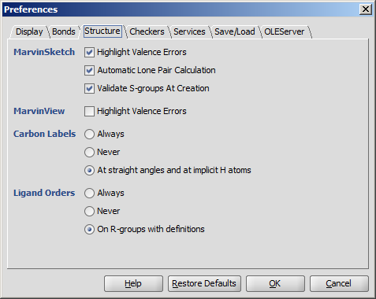
 |
 |
 |
| Always | Never | At straight angles and implicit H atoms |
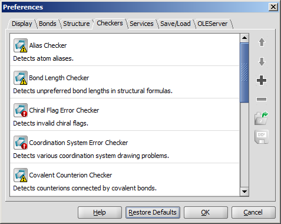
The Services module provides seamless integration of third-party calculations into Marvin Sketch. You can add and configure the desired calculations in the Services tab. The set service(s) can be used from the Tools > Services menu afterwards.
XML file.XML file.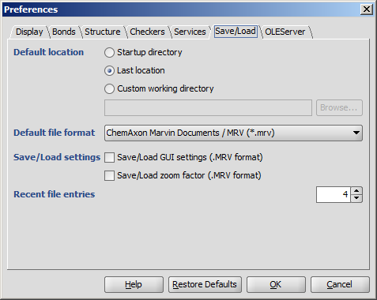
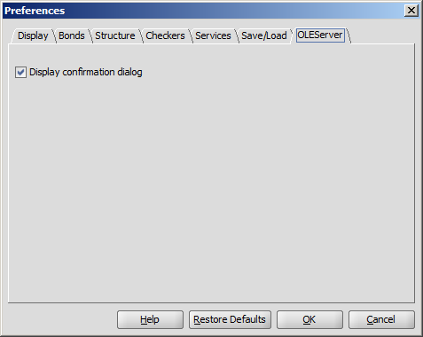
You can alter a molecule by directly editing its source in the Edit Source dialog window.
The dialog window provides standard clipboard operations and it is also possible to send the source text to the console.
You can view and edit the source in any of the supported file formats.
You can also convert it to Java String which allows easy integration of the structure to a custom Java application code.
To change the format of the source, simply select one from the View
Menu. If there are more than one molecule on the canvas, setting View as multiple molecules in the View Menu causes
each molecule to appear in a separate block in the source. This feature works only in those cases where the selected format is able to handle multiple fragments.
After editing the source text, you can send the structure back to the
MarvinSketch canvas by invoking File >
Import As, and pressing Import on the appearing dialog window. This will close the Edit Source dialog window.
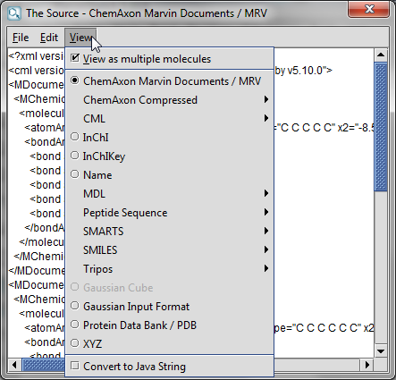
On this panel there are many options to change the drawing properties of atoms and bonds.
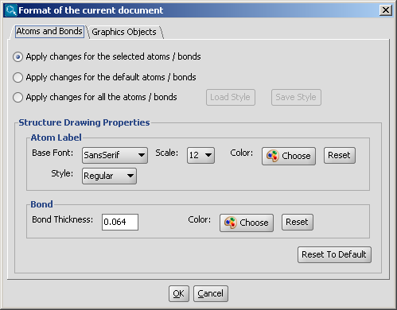
For more information about using structure drawing styles, please visit this link.
The drawing properties of graphics objects (text boxes, brackets, lines, etc.) can be changed on this panel.
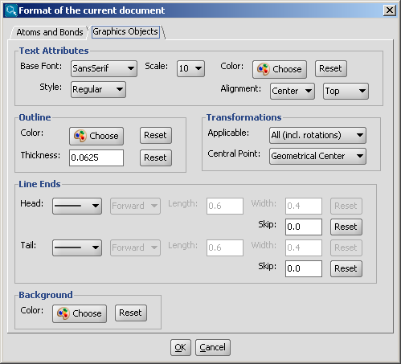
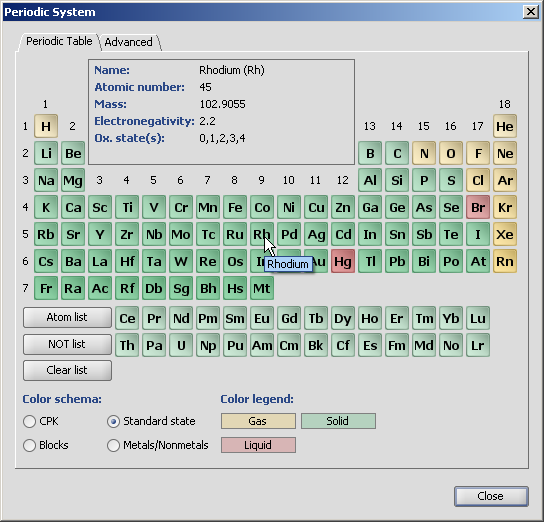
Chemical elements are available as buttons on the Periodic Table panel of MarvinSketch.
Atom buttons are arranged according to the standard periodic table layout.
When the mouse cursor is over a specific atom button, the information panel displays
the name of the atom, the atomic number, mass, electronegativity and the oxidation states.
When one of the atom buttons is pressed, the corresponding atom can be placed on the canvas.
The atom symbol appears under the mouse cursor, while the button is highlighted in this case.
The Atom List and NOT List buttons can be used to create special atom lists that can be used in queries. When one of these buttons is pressed, atoms can be added to the list by pressing atom buttons one after the other. The lists are not cleared when the list buttons become unselected. The atoms of the list are also shown under the mouse cursor above the canvas. See Query Guide for more details about atom lists and not lists.
Four different coloring schemas can be chosen:
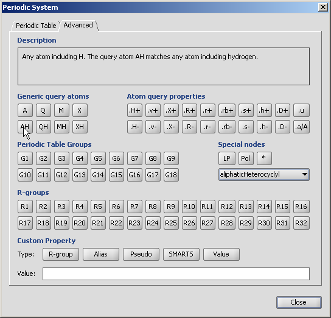
For the meanings of the buttons on the Advanced tab please refer to the Query Guide.
When the mouse cursor is over a button, a short description appears on the information panel.
Name Description A Any (any atom except hydrogen) AH Any atom, including hydrogen Q Hetero (any atom except hydrogen and carbon) QH Hetero atom or hydrogen (any atom except carbon) M Metal (contains alkali metals, alkaline earth metals, transition metals, actinides, lanthanides, poor(basic) metals, Ge, Sb and Po) MH Metal or hydrogen X Halogen (F,Cl,Br or I) XH Halogen or hydrogen
Name Description .H+ Increase number of total hydrogens (total number of hydrogen substituents) .H- Decrease number of total hydrogens (total number of hydrogen substituents) .v+ Increase number of valence (total bond order) .v- Decrease number of valence (total bond order) .X+ Increase number of connections (number of substituents including hydrogens) .X- Decrease number of connections (number of substituents including hydrogens) .R- Increase number ofrings (number of rings the atom is a member of) .R+ Decrease number of rings (number of rings the atom is a member of) .r+ Increase smallest ring size (size of the smallest ring the atom is a member of) .r- Decreasesmallest ring size (size of the smallest ring the atom is a member of) .rb+ Increase ring bond count (number of ring bonds next to the atom) .rb- Decrease ring bond count (number of ring bonds next to the atom) .s+ Increase substitution count (number of non-H substituents) .s- Decrease substitution count (number of non-H substituents) .h+ Increase number of implicit hydrogens (number of implicit hydrogen substituents) .h- Decrease number of implicit hydrogens (number of implicit hydrogen substituents) .D+ Increase degree (number of explicit connections; default for "n" is one) .D- Decrease degree (number of explicit connections; default for "n" is one) .u Mark as unsaturated atom (atom has double, triple or aromatic bond) .a/A Mark as aromatic/aliphatic (has aromatic bond)
Name Description Group 1 (IA,IA) the alkali metals or hydrogen family/lithium family Group 2 (IIA,IIA) the alkaline earth metals or beryllium family Group 3 (IIIA,IIIB) the scandium family Group 4 (IVA,IVB) the titanium family Group 5 (VA,VB) the vanadium family Group 6 (VIA,VIB) the chromium family Group 7 (VIIA,VIIB) the manganese family Group 8 (VIII) the iron family Group 9 (VIII) the cobalt family Group 10 (VIII) the nickel family Group 11 (IB,IB) the coinage metals or copper family Group 12 (IIB,IIB) the zinc family Group 13 (IIIB,IIIA) the boron family Group 14 (IVB,IVA) the carbon family Group 15 (VB,VA) the pnictogens or nitrogen family Group 16 (VIB,VIA) the chalcogens or oxygen family Group 17 (VIIB,VIIA) the halogens or fluorine family Group 18 (Group 0) the noble gases or helium family/neon family
Name Description LP Lone Pair. This button changes the selected atom to an explicit lone electron pair. Pol Pseudo atom 'Pol'. This button changes the selected atom to a pseudo atom labelled Pol (polymer). * This button creates a '*' atom, which indicates an unspecified end group in polymers. homology groups The drop-down list contains the default homology groups. Detailed list.
Name Description R-group Converts the atom to an R-group with the given number (only numerical characters are allowed). Maximum index is 32767. This atom can be used to describe an unknown or unspecified molecule part or to draw an R-group query or Markush structure. Alias The given value is shown as atom label but the atom itself does not change. Pseudo The given value is shown as atom label and the type of the atom is changed to 'Any'. SMARTS Converts the given value to a complex SMARTS query molecule or atom. If the cursor is kept over the canvas during typing, the conversion can be seen on-the-fly. Value Adds the given value to an atom as a custom property ("Atom value").
The Template Library is a hierarchic display of template sets.
It contains several template sets by default (such as Generic, Rings, Amino Acids, etc), and a special set called My Templates.
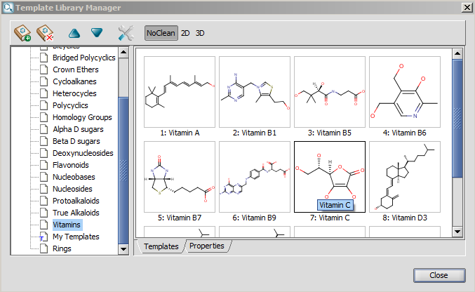The dialog has buttons to customize template handling. With the help of these buttons you can add and remove template sets to/from the template library, can change order of a given template set, or open the "Options" dialog. The cleaning options of the templates can be set using the last three buttons on the toolbar. With these buttons you can specify how the template will be placed onto the canvas (NoClean, 2D, or 3D). These options can be set separately for each template category. Note, that the buttons are synchronized with the "Template Options" dialog settings.
 |
 |
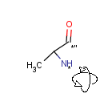 |
| As in the original structures | Always perform Clean2D | Always perform Clean3D |
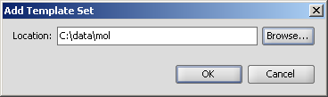
It is also possible to specify a location with ftp protocol. The underlying subdirectories and files will be displayed as with the local file system.
Please note that protocols other than file and ftp are not supported. However remote file systems can help to overcome this restriction.
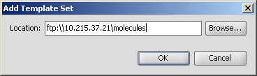
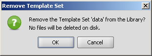
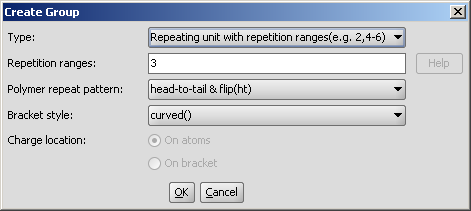The available groups and their detailed description are available by clicking on the links below:
Attached data is a custom field assigned to atoms or brackets. It has an identifier string (name) and a value. Furthermore, a query operator can describe different restrictions in queries.
The dialog provides interface to set the properties of such a field.
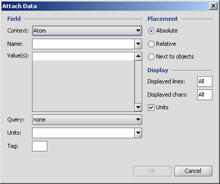
Further details of attached data can be found in the Query guide.
Attaching data in MarvinSketch is described here.
The Attach Data dialog is customizable; configuration options and a small example can be found here.
Properties may be added and viewed in MarvinSketch. Various properties can be added, but the value is displayed only on the canvas. Detailed description
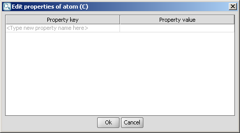